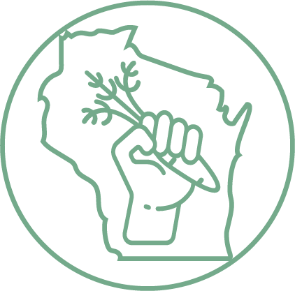
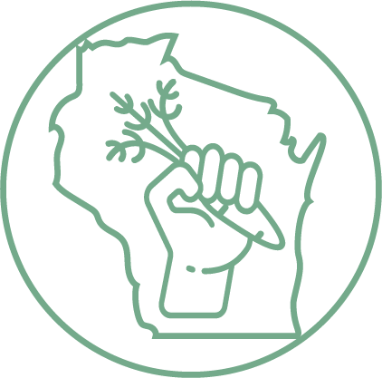

The purpose of this map is to help you find resources.
Whether you are an individual who needs to find food for yourself, your family, or a friend; an individual, group, or company that would like to donate food; or part of an organization that would like to work with other organizations to distribute food; this map is for you.
To use this map, open the "Services" and "Providers" tabs by clicking on them. Click on the box(es) that best represent what you are looking for.
For example, if you are looking for a store or farmer's market that accepts SNAP (Supplemental Nutrition Assistance Program - also known as "EBT," "FoodShare," or "Food Stamps"), click on the box next to the "Accepts SNAP" service.
If you are looking for a store that accepts WIC (a supplemental nutrition program for Women, Infants, and Children), click on the box next to the "Accepts WIC" service.
If you are looking for a food bank or pantry, click on the box next to the "Food Bank/Pantry" service.
Once you click on the box(es) of your choice, organizations that meet the requirements of your choices will show up as a dot/dots on the map.
Then, when you click on a dot, more information will be available in the box in the "location information" section in the upper righthand side corner of the map.
This box will provide as much information as we have about that organization. This may include their mission statement, their phone number, their address, their website, and/or other important information.
The legend in the lower right-hand area of the map indicates which type of service is provided.
To navigate the map, you have many options. You can use your mouse or touchpad if you wish.
However, you can also use the zoom controls. These controls are at the upper-lefthand side of the map and consist of a "+" and a "-" button. The + button zooms in closer, and the - button zooms out.
If you want the map to go back to the way it was before you zoomed in or out, you may click on the "Reset Zoom" button underneath these controls.
If you want to move the map up, down, or to the left or right without zooming, you can use the "pan" buttons. These buttons have arrows pointing in the direction the map will move if you click on them.
The "Reset Zoom" button will also reset the map after you have panned in another direction.
If you would like to know more about the data sources for this map, please contact wifoodaccess@gmail.com.
 
